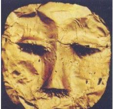

Sumber Sejarah Kerajaan Tarumanegara

Menurut para ahli arkeolog, letak Kerajaan Tarumanegara berada di Jawa Barat
di tepi Sungai Cisadane, yang saat ini merupakan wilayah Banten. Kerajaan
Tarumanegara berpusat di Sundapura, yang saat ini dikenal sebagai Bekasi. Wilayah
kekuasan Kerajaan Tarumanegara hampir meliputi seluruh wilayah Jawa Barat
dan Banten. Bahkan, Kerajaan Tarumanegara juga memiliki pengaruh besar pada
kerajaan yang ada di Jawa Tengah dan Jawa Timur.
Mengenai letak ibukota Tarumanegara dengan keratonnya masih belum bisa
dipastikan. Tetapi berdasarkan ilmu bahasa Prof Dr. Poerbatjaraka memperkirakan
bahwa letak Keraton Taruma itu di daerah Bekasi. Hal tersebut berdasarkan
keterangan yang terdapat pada Prasasti Tugu tentang penggalian Sungai Chandrabaga
yang alirannya melewati istana sebelum sampai ke laut,dengan alasan bahwa Sungai
Chandrabhaga adalah dalam bahasa sansakerta, sementara dalam bahasa Indonesia
menjadi Bhaga Candra, Candra yang dalam bahasa Indonesia adalah bulan, dalam
bahasa sunda adalah sasih, sehingga Bhaga Candra menjadi Bhagasasih, yang lambat
laun berubah menjadi Bekasi.
Di daerah Bekasi sendiri, sejak tahun-tahun yang lalu telah ditemukan alat-alat
prasejarah seperti pahat dan kapak batu serta pecahan-pecahan periuk. Kecuali
benda - benda prasejarah juga terdapat benda-benda yang sudah masuk masa-masa
jauh setelah zaman Batu-Baru dan Perunggu Besi. Tidak jauh dari Bekasi yakni di
Cibuaya, Rengasdengklok pada tahun 1952 pernah ditemukan area Wishnu yang usianya
kurang lebih dari abad ke-7, dimungkinkan area tersebut berasal dari masa Tarumanegara.
Berdasarkan naskah wangsakerta Tarumanegara didirikan oleh Rajadirajaguru Jayasingawarman pada tahun 358. Rajadirajaguru Jayasingawarman merupakan seorang Maharesi atau Pendeta dari Salankayana di India, dia mengungsi ke Nusantara karena kerajaan tempat asalnya ditaklukan Kerajaan Magadha.
Dalam naskah itu, dikatakan pada abad ke-4 Masehi nusantara didatangi oleh sejumlah pengungsi dari India yang mencari perlindungan akibat terjadi peperangan besar di sana. Umumnya pengungsi tersebut berasal dari daerah kerajaan Palawa dan Calankaya di India. Salah satu rombongan pengungsi tersebut dipimpin oleh seorang Maharesi yang bernama Jayasingawarman. Ketika telah mendapatkan persetujuan dari raja Dewawarman VIII, raja Salakanagara maka mereka membangun tempat pemukiman baru di dekat sungai Citarum. Pemukiman tersebut disebut Tarumadesya (desa Taruma). Sepuluh tahun berjalan ternyata desa ini banyak didatangi oleh orang - orang, sehingga Tarumadesya menjadi besar. Pada akhirnya wilayah yang hanya setingkat desa tersebut berkembang menjadi kota (nagara). Diduga bahwa nama asli kerajaan Taruma adalah kerajaan Aruteun. Hal ini sesuai dengan catatan sejarah Cina, bahwa negeri Ho-lo- tan (Aruteun) di She-po (Jawa) telah mengirimkan utusan ke Cina pada tahun 430, 437, dan 452 masehi. Setelah mendapat pengaruh budaya India, nama Aruteun diubah menjadi Taruma. Nama Taruma ini diambil dari nama daerah di India Selatan. Perubahan nama ini diperkirakan terjadi pada akhir abad ke-5 masehi. Sejak abad ke-6 masehi, nama Ho-lo- tan (Aruteun) tidak disebut-sebut lagi. Sebagai gantinya muncul nama To-lo-mo (Taruma) yang pernah mengirimkan utusan ke Cina pada tahun 528, 535, 630, dan 669 masehi.
Keterangan tentang kerajaan Tarumanegara didapat dari beberapa sumber baik dari dalam maupun luar negeri, diantaranya :
a. Sumber Dalam Negeri :
Berupa prasasti yang ditemukan di tempat-tempat berbeda namun tidak terlalu
jauh satu sama lain. Berikut adalah beberapa prasasti peninggalan kerajaan
Tarumanegara.
Pada prasasti ini ditemukan ukiran laba-laba dan telapak kaki serta sajak
beraksara palawa dalam bahasa Sanskerta. Berdasarkan pembacaan oleh
Poerbatjaraka dalam prasasti ini berbunyi :
“Ini (bekas) dua kaki, yang seperti kaki Dewa Wisnu, ialah kaki Yang Mulia Sang
Purnavarman, raja di negeri Taruma, raja yang gagah berani di dunia”.
Seperti namanya, prasasti ini ditemukan di kawasan perkebunan jambu,
bukit Pasir Koleyangkak, Leuwiliang, Kabupaten Bogor atau 30 Km setelah
bagian barat Bogor. Prasasti ini juga disebut Prasasti Koleangkak atau Pasir
Jambu. Isi dari tulisan yang dituliskan dalam prasasti pasir jambu adalah sebagai
berikut :
“Gagah, mengagumkan, dan jujur terhadap tugasnya adalah pemimpin
manusia yang tiada taranya, yang termashur Sri Purnawarman, yang sekali waktu
(memerintah) di Taruma dan baju zirahnya yang terkenal (warman). Tidak dapat
ditembus senjata musuh. Ini adalah sepasang tapak kakinya yang senantiasa
berhasil menggempur kota-kota musuh, hormat kepada pangeran, tetapi
merupakan duri dalam daging bagi musuh-musuhnya.”
Dapat disimpulkan bahwa isinya adalah :
Tapak kaki ini adalah tapak kaki Sri Purnawarman raja Tarumanegara.
Baginda termasyhur gagah berani, jujur dan setia menjalankan tugasnya, dan tak
ada taranya. Baginda selalu berhasil membinasakan musuh-musuhnya. Baginda
hormat kepada para pangeran tetapi sangat ditakuti oleh musuh-musuhnya, serta
melindungi mereka yang memberikan bantuan kepadanya”.
Ditemukan di Pasir Awi , Bogor. Dalam prasasti ini juga terdapat gambar telapak kaki dan tulisan ikal. Namun, sayangnya isi dari prasasti ini belum dapat disimpulkan oleh para ahli.
Prasasti kebun kopi ditemukan di kampung Muara Hilir, Cibungbulan,
Bogor.Isinya tidak terlalu banyak, berikut adalah isi dari prasasti kebun kopi.
“Di sini nampak sepasang tapak kaki… yang seperti Airwata, gajah
penguasa taruma (yang) agung dalam … dan (?) kejayaan.”
Sumber lain mengungkapkan bahwa Isinya, dapat pula disimpulkan menjadi :
“Telapak kaki seperti telapak kaki airawata. Airawata adalah gajah kendaraan
dewa Indra. Inilah telapak kaki penguasa negara Taruma yang agung.”
Didalamnya juga diperkirakan dideskripsikan mengenai kejayaan kerajaan
Taruma atau Tarumanegara/Tarumanagara.
Prasasti ini ditemukan di Muara Cianten, Bogor. Prasasti ini memiliki kemiripan dengan Prasasti Awi (memiliki gambar telapak kaki dan tulisan ikal). Namun, tulisan atau isinya belum dapat disimpulkan oleh para Ahli.
Prasasti ini ditemukan di Tugu, daerah Cilincing, DKI Jakarta dekat perbatasan
dengan daerah Bekasi. Isinya menyebutkan :
“Dahulu sungai yang bernama candra bhaga telah (disuruh) gali oleh Maharaja
Purnamarwan. Maharaja yang mulia mempunyai lengan yang kuat. Setelah sampai ke
istana kerajaan yang termasyhur, sungai dialirkan ke laut. Di dalam tahun ke-22 dari
takhta yang mulia raja Purnawarman yang gemerlapan karena kepandaian dan
kebijaksanaannya serta menjadi panji-panji dari segala raja- raja”
Baginda memerintahkan pula, menggali sungai yang permai bersih jernih yang
bernama gomati setelah sungai itu mengalir di tempat kediaman yang mulia Nenekda
sang pendeta (sang Purnawarman).
Pekerjaan ini dimulai pada hari yang baik tanggal 8 paro petang bulan Phalguna
dan selesai pada tanggal 13 paro terang bulan Caitra, hanya 21 hari saja sedang galian
itu panjangnya 6122 tumbak. Upacara (selamatan) itu dilakukan oleh para Brahmana
disertai 1000 ekor sapi yang dikorbankan.”
Diduga, penggalian untuk membuat sungai tersebut dilakukan untuk
mengendalikan banjir dan membantu usaha pertanian yang diperkirakan berada di
wilayah Jakarta saat ini. Sungai tersebut adalah sungai Candrabaga.
Penyebutan Brahmana yang merupakan kasta tertinggi dalam kepercayaan
Hindu dan bertugas mempin upacara dalam ritual ajaran Hindu, serta persembahan
1000 ekor sapi yang merupakan binatang suci dalam ajaran Hindu. Ke dua hal tersebut
memberi petunjuk bahwa kerajaan Tarumanegara berbudaya Hindu.
Prasasti ditemukan di kampung Lebak, tepi sungai Cidanghiang, kecamatan Muncul, kabupaten Pandeglang, Banten. Oleh karena itu, terkadang prasasti ini juga disebut prasasti Cidanghiang atau prasasti Munjul. Dalam prasasti ini disebutkan :
“inilah tanda keperwiraan yang mulia Purnawarman. Baginda seorang raja yang agung dan gagah berani. Baginda seorang raja dunia dan menjadi panji sekalian raja”.
Prasasti ini juga memuat batas-batas kerajaan Tarumanegara, yakni: sebelah barat berbatasan dengan laut, sebelah selatan juga berbatas dengan laut, sebelah timur dengan sungai Citarum dan sebelah utara dengan daerah Karawang.
Situs ini terletak di Desa Cemplang, Kecamatan Cibungbulang berada pada bukit kecil di sebelah utara daerah aliran sungai Cianten yang mengalir dari selatan ke utara. Di bukit tersebut terdapat monolit setinggi 1,2 m.
Di sini, ditemukan berbagai artefak seperti: tembikar, porselin, kemarik dari bahan batuan, artefak kaca, artefak perunggu, besi, dan emas. Salah satu artefak tersebut adalah topeng emas.

b. Sumber Luar Negeri :
Sumber sejarah Kerajaan Tarumanegara ternyata juga didapat dari berita musafir
China yang bernama Fa-Hien. Musafir yang datang di Jawa pada tahun 414 M
membuat catatan tentang adanya Kerajaan To-lo-mo. atau Taruma. Istilah To-lo-mo ini
tentu dimaksudkan pada kerajaan Tarumanegara.
Sumber sejarah dari luar negeri didapatkan dari berita musafir China yang bernama
Fa-Hien. Fa-Hien datang ke tanah Jawa pada tahun 414 M untuk membuat catatan
mengenai keberadaan kerajaan To-lo-mo. Kerajaan yang di maksud ternyata mengarah
pada kerajaan Tarumanegara. Dalam catatan Fa-Hien dikatakan bahwa dalam
perjalanannya menuju India, ia singgah di Yo-p’o-ti dan berdiam di sana selama 5 bulan,
di sana sedikit sekali pemeluk Budha. Sementara itu, dalam kronik dinasti Tang (618-
906) diungkapkan bahwa antara tahun 528-539 dan 666-669 telah datang di Cina utusan
dari Kerajaan To-lo-mo (Tarumanegara).
Diperkirakan setidaknya ada dua golongan dalam masyarakat. Pertama, golongan
masyarakat yang berbudaya Hindu, kelompok ini terbatas pada lingkungan keraton saja.
Kedua, golongan masyarakat yang berbudaya asli yang meliputi bagian terbesar penduduk
Tarumanegara, meskipun demikian, mereka tetap rukun.
berdasarkan berita dari Fa-hsien, bahwa pada awal abad 5 M, di Tarumanegara
terdapat tiga agama, yaitu agama Buddha, Hindu dan agama yang kotor. Dari ketiga agama
tersebut, agama Hindu merupakan agama yang paling banyak dianut oleh masyarakat, hal itu
diperkuat dengan adanya bukti-bukti prasasti dan arca.
Kesimpulannya, agama yang dianut adalah :
1. Agama Hindu seperti yang di anut Purnawarman,
2. Agama Budha meskipun hanya sedikit, dan
3. Penganut animisme dan dinamisme.
Berdasarkan Prasasti Tugu, bahwa sebagai selamatan atas penggalian sungai
Chandrabga, Raja Purnawarman memberikan 1000 ekor sapi kepada para Brahmana. Sapi
dan Brahmana adalah petunjuk bahwa agama resmi kerajaan adalah Hindu.
1. Perdagangan
Catatan Fa-Hien,seoarang musafir Cina,masyarakat Tarumanegara sudah
melakukan kegiatan berdagang. Barang yg diperdagangkan antara lain beras dan kayu
jati.
Prasasti tugu menyatakan bahwa raja Purnawarman memerintahkan rakyatnya
untuk membuat sebuah terusan sepanjang 6122 tombak. Pembangunan terusan ini
mempunyai arti ekonomis yang besar bagi masyarakat, karena dapat dipergunakan
sebagai sarana untuk mencegah banjir serta sarana lalu-lintas pelayaran perdagangan
antardaerah di kerajaan Tarumanegara dengan dunia luar. Juga perdagangan dengan
daerah-daerah di sekitarnya. Akibatnya, kehidupan perekonomian masyarakat
kerajaan Tarumanegara sudah berjalan teratur.
2. Pertanian
Penggalian Sungai ChandraBaga oleh Raja Purnawarman seperi diuraikan
dalam Prasasti Tugu juga dimaksudkan sebagai sarana pengairan bagi persawahan di
Kerajaan Tarumanegara.
3. Peternakan
Sebagai selamatan atas penggalian sungai Chandrabaga , Raja Purnawarman
memeberi 1000 ekor sapi kepada para Brahmana seperti yang tertera dalam prasasti
Tugu menunjukan bahwa masyarakat Tarumanegara sudah mengembangkan
peternakan yang baik.
Tanda tanda kemunduran Kerajaan Tarumanegara sudah dimulai pada masa
kepemimpinan Raja Sudawarman. Hal tersebut didorong oleh beberapa factor antara lain :
1. Raja sudawarman kurang peduli terhadap masalah masalah yang terjadi di kerajaannya,
yang menyebabkan raja raja bawahannya merasa tidak diawasi dan tidak dilindungi
2. Pada masa pemerintahan Raja Sudawarman muncul pesaing Kerajaan Tarumanegara
yaitu Kerajaan Galuh. Kerajaan galuh didirikan oleh Wretikandayun, cucu dari
Kretawan, Raja ke 8 Kerajaan Tarumanegara . Sebelum menjadi sebuah kerajaan,
Galuh adalah bagian dari Kerajan Tarumanegara
3. Raja Terakhir Kerajaan tarumanegara adalah Linggawarman ( raja ke 12 ) yang tidak
memiliki putera, tetapi dia memiliki dua orang puteri, yaitu Manasih yang menikah
dengan Tarusbawa, raja pertama dari Kerajaan sunda. Sedangkan puteri ke dua adalah
Sobakancana yang menikah dengan Dapuntahyang Sri Jayanasa ,Pendiri Kerajaan
Sriwijaya. Tahta Kerajaan Tarumanegara kemudian jatuh ketangan menantu pertama
yaitu Tarusbawa yang ingin mengangkat kembali kejayaan Kerajaan Tarumanegara
dengan cara mengembangkan Kerajaan sunda yang sebelumnya adalah Kerajaan
bawahan Tarumanegara kemudian menggabungkan kerajaan Tarumanegara dengan
Kerajaan sunda, namun ternyata hal ini membuat hubungan kerajaan Tarumanegara
dengan kerajaan lainnya melemah.
4. Kerajaan galuh memutuskan untuk memisahkan diri dari Kerajaan Tarumanegara.
Pemisahan ini juga didukung oleh Kerajaan Kalingga, karena putera mahkota Kerajaan
Galuh menikah dengan puteri Kerajaan kalingga. Dukungan ini membuat Kerajaan
galuh meminta agar wilayah Kerajaan Tarumanegara dibagi menjadi dua yang disetujui
oleh raja tarusbawa untuk menghindari perang saudara. Sehingga sejak saat itu
Kerajaan Tarumanegara dibagi menjadi wilayah Kerajaan Sunda dan Kerajaan Galuh
dengan sungai Citarum sebagai batasnya.
5. Informasi yang didapat dari Prasasti Kota Kapur (686 M) menyatakan bahwa Dapunta
Hyang Sri Jayanagara berupaya melancarkan serangan kepada Bhumi Jawa karena
dianggap tidak mau tunduk kepada Sriwijaya. Serangan ini diperkirakan terjadi
bersamaan dengan runtuhnya Tarumanagara dan Ho-Ling menjelang akhir abad ke-7
Masehi. Hal ini tentunya cukup kuat karena memasuki abad ke-8, Sriwijaya memiliki
ikatan yang kuat dengan Wangsa Sailendra dari Jawa Tengah.
Berdasarkan uraian tersebut diperkirakan Kerajaan Tarumanegara berakhir abad
ke-7 M. Karena sejak abad tersebut tidak ada lagi berita-berita yang dapat dihubungkan
dengan nama rajanya. Menurut Ir. J.L. Moens dari Prasasti Kota Kapur ± 686 M di Pulau
Bangka tentang perjalanan Dapuntahyang ke Bhumi Jawa dengan membawa 20.000
tentara dengan maksud untuk menghukum negeri tersebut yang tidak mau tunduk pada
Sriwiaya runtuhnya Kerajaan Tarumanegara pada akhir abad tersebut disebabkan oleh
penyerangan Sriwijaya.